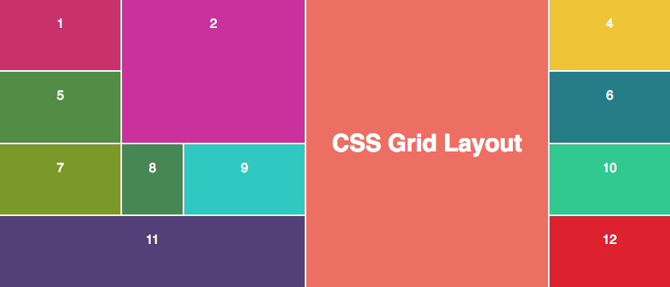

Es un sistema de maquetación web que divide la página en una cuadrícula o rejilla (grid) a partir de la cual se pueden posicionar los diferentes elementos de manera más sencilla, versátil y coherente.Su practicidad y sus múltiples ventajas lo han convertido en un estándar. Es decir, casi cualquier navegador soporta e interpreta este tipo de código.La irrupción de CSS Grid, junto con Flexbox, supuso una revolución en el mundo de la programación web, ya que permitía realizar con mucho menos código elementos y estructuras que resultaban muy complejas o directamente imposibles.
Primeros pasos 1.Crea un bloque Contenedor 2.Activa CSS Grid 3.Define tu rejilla 4.Colocar los elementos en la rejilla
Tomado de: Mariño, M. (2019, 22 agosto). CSS Grid: ventajas y primeros pasos. El blog de dinahosting. https://dinahosting.com/blog/css-grid-ventajas-y-primeros-pasos/
